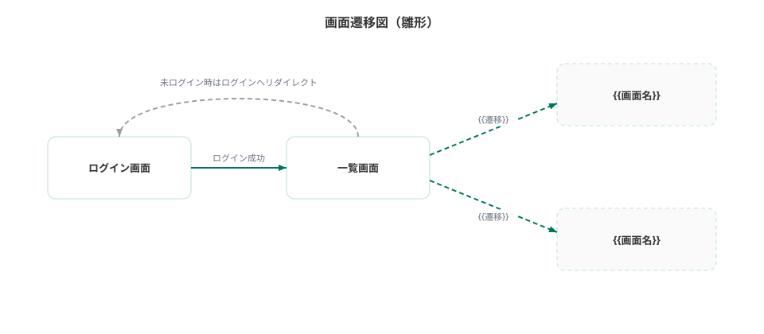

01 要件定義 · 03/04
機能要件
{{アプリ名}} が提供する機能・受け入れ基準・画面構成を定義する。
記入ガイド
機能ID=F-連番、画面ID=S-連番で一貫させる。ログイン画面はテンプレート既定。
受け入れ基準は AI が「完成」を自己判定する検証基準。Given-When-Then で漏れなく書く。
一覧・基準は表、遷移は図解(正本の md では Mermaid)。行は増減可。
受け入れ基準は各機能の合格条件。Given-When-Then の1行で1条件。全て満たせば完成とみなす。この基準が AI 実装時の答え合わせ・Definition of Done の源泉になる。
画面一覧は S-01 ログイン, S-99 エラー(404/500) がテンプレート既定。残りを埋める。
画面遷移図はログイン→メインの遷移がテンプレート既定。{{画面名}} を実画面に置換。
機能一覧
| ID | 機能名 | 区分 | 概要 | 対応画面 |
|---|---|---|---|---|
| (例) F-01 | 実績登録 | 必須 | 日次実績の入力・保存 | S-02 |
| F-00 | ログイン / ログアウト | 必須 | 共通認証基盤による認証(テンプレート既定) | S-01 |
| F-01 | {{機能名}} | 必須 | {{概要}} | {{画面ID}} |
| F-02 | {{機能名}} | 必須 | {{概要}} | {{画面ID}} |
| F-03 | {{機能名}} | オプション | {{概要}} | {{画面ID}} |
受け入れ基準
| 機能ID | ID | Given(前提) | When(操作) | Then(期待結果) |
|---|---|---|---|---|
| (例) F-01 | AC-01 | ログイン済みで実績未登録 | 必須項目を入力し保存 | 一覧に登録内容が表示される |
| F-00 | AC-00 | 未ログイン状態 | 認証が必要な画面にアクセス | ログイン画面にリダイレクトされる |
| F-01 | AC-01 | {{前提}} | {{操作}} | {{期待結果}} |
| F-01 | AC-02 | {{前提}} | {{異常系の操作}} | {{エラー表示・処理中断}} |
| F-02 | AC-03 | {{前提}} | {{操作}} | {{期待結果}} |
画面一覧
| ID | 画面名 | 概要 | 対応機能 | 認証要否 |
|---|---|---|---|---|
| S-01 | ログイン画面 | 認証情報の入力(テンプレート既定) | F-00 | 不要 |
| S-02 | {{画面名}} | {{概要}} | {{機能ID}} | 要 |
| S-03 | {{画面名}} | {{概要}} | {{機能ID}} | 要 |
| S-99 | エラー画面 | 404 / 500 表示(テンプレート既定) | － | 不要 |
画面遷移図

クリックで拡大
{{PROJECT_NAME}} 設計書雛形 · 正本は Markdown(docs-template/) · インデックス